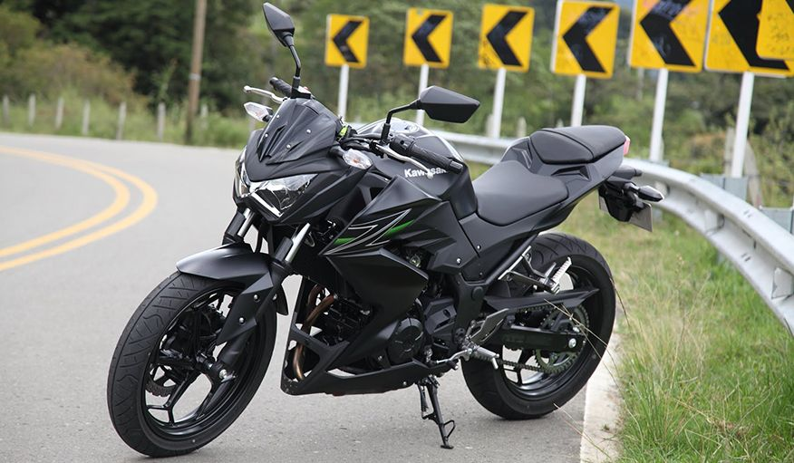

La Kawasaki Z250 es parte de la famosa línea Z de motocicletas naked de Kawasaki, que comenzó a ganar notoriedad en la década de 1970. La familia Z ha sido sinónimo de motos deportivas, con un diseño agresivo y un rendimiento impresionante, y la Z250 no es una excepción, aunque es una moto más orientada a los novatos o a aquellos que buscan una moto de menor cilindrada.
La historia de la Z250 se remonta a principios de la década de 2010, cuando Kawasaki decidió ofrecer una opción de cilindrada media, con un motor de 250cc, dentro de su serie Z. Este modelo buscaba atraer a un público joven y urbano que buscaba una moto de estilo naked, liviana y fácil de manejar, pero con una estética deportiva y agresiva.
En su lanzamiento, la Z250 presentó un motor bicilíndrico de 249cc, inspirado en las características de las motos más grandes de la línea Z, como la Z800 y Z1000, con un diseño que reflejaba la herencia de la serie Z. La Z250 fue diseñada para ser una moto versátil, capaz de adaptarse tanto a la ciudad como a trayectos más largos.
A lo largo de los años, la Kawasaki Z250 ha sido actualizada y ha evolucionado para mantenerse competitiva en su segmento. En muchos mercados, la Z250 se ha ganado la reputación de ser una excelente opción para quienes buscan dar el salto a una motocicleta más potente después de comenzar con motos de cilindrada más baja. Además, la Z250 ha sido apreciada por su fiabilidad, bajo costo de mantenimiento y atractivo diseño.
En resumen, la Kawasaki Z250 ha logrado consolidarse como una opción popular para los motociclistas jóvenes y novatos que buscan estilo, rendimiento y economía, todo en un solo paquete
